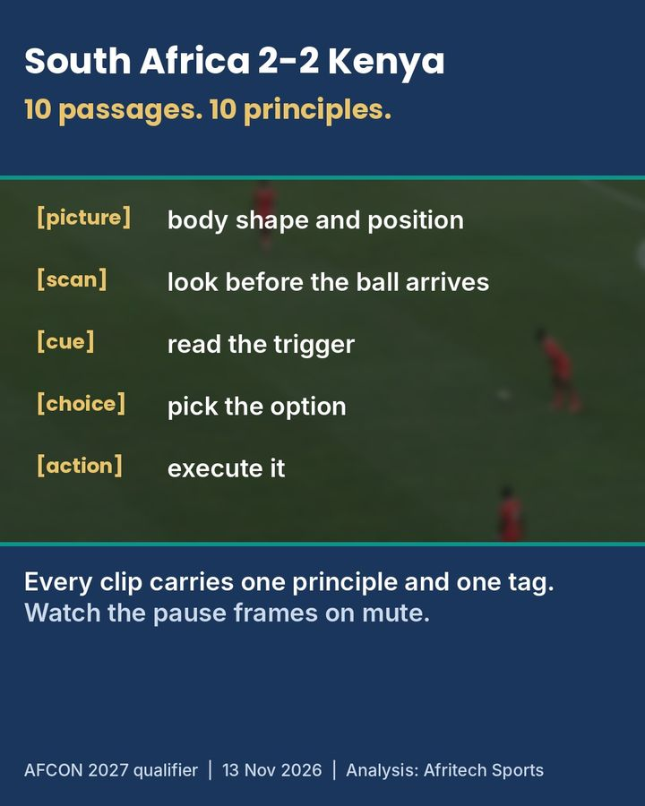
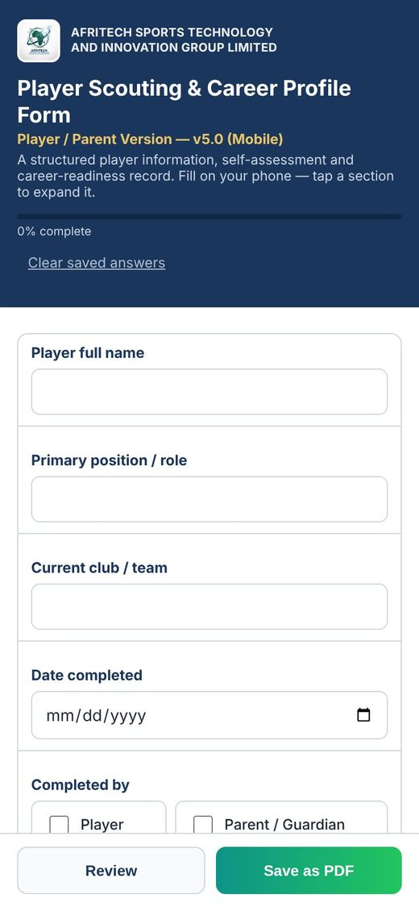
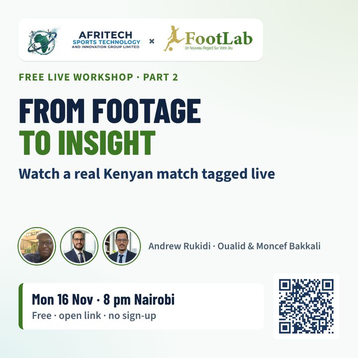

Afritech Sports · Nairobi, KenyaAfritech Sports · Nairobi, KenyaAfritech Sports · Nairobi, KenyaAfritech Sports · Nairóbi, Quênia
Advisory services: the evidence and know-how behind every football decision.Services de conseil : les preuves et le savoir-faire derrière chaque décision football.Huduma za ushauri: ushahidi na ujuzi nyuma ya kila uamuzi wa soka.Consultoria: as evidências e o conhecimento por trás de cada decisão no futebol.
Match analysis, scouting dossiers, football CVs, legal guidance and training, delivered by our team in Nairobi for clubs, academies, schools, agents and federations.Analyse de match, dossiers de recrutement, CV football, conseil juridique et formation, assurés par notre équipe à Nairobi pour les clubs, académies, écoles, agents et fédérations.Uchambuzi wa mechi, ripoti za uskauti, CV za soka, ushauri wa kisheria na mafunzo, yanayotolewa na timu yetu Nairobi kwa klabu, akademia, shule, mawakala na mashirikisho.Análise de partidas, dossiês de scouting, currículos de futebol, orientação jurídica e capacitação, feitos pela nossa equipe em Nairóbi para clubes, academias, escolas, agentes e federações.
Tell us what you need and we'll come back to you.Dites-nous ce dont vous avez besoin et nous reviendrons vers vous.Tuambie unachohitaji na tutawasiliana nawe.Conte o que você precisa e retornaremos o contato.
LatestActualitésHabari mpyaÚltimas notícias

Africa's first U-17 world title: our full read of the finalPremier titre mondial U-17 pour l'Afrique : notre analyse complète de la finaleTaji la kwanza la dunia U-17 kwa Afrika: uchambuzi wetu kamili wa fainaliO primeiro título mundial Sub-17 da África: nossa leitura completa da final
Nigeria beat Japan 2-1 in the FIFA U-17 Women's World Cup final in Rabat on 7 November 2026. Our MatchIQ dashboard shows how all three goals were made, where each team's game worked and where it broke down, player radars for both squads, and five dated next steps for the teams and federations. Built from 16 named sources, it opens on any phone and keeps working with no signal. Coaches, federations and clubs can have the same report on their own matches.Le Nigeria a battu le Japon 2-1 en finale de la Coupe du monde féminine U-17 de la FIFA à Rabat, le 7 novembre 2026. Notre tableau de bord MatchIQ montre comment les trois buts ont été construits, ce qui a fonctionné et ce qui a cédé dans le jeu de chaque équipe, les radars des joueuses des deux effectifs et cinq prochaines étapes datées pour les équipes et les fédérations. Fondé sur 16 sources citées, il s'ouvre sur n'importe quel téléphone et fonctionne même sans réseau. Entraîneurs, fédérations et clubs peuvent obtenir le même rapport sur leurs propres matchs.Nigeria iliifunga Japan 2-1 katika fainali ya Kombe la Dunia la Wanawake la FIFA U-17 mjini Rabat tarehe 7 Novemba 2026. Dashibodi yetu ya MatchIQ inaonyesha jinsi mabao yote matatu yalivyopatikana, mahali mchezo wa kila timu ulipofanya kazi na ulipovunjika, rada za wachezaji wa vikosi vyote viwili, na hatua tano zenye tarehe kwa timu na mashirikisho. Imejengwa kwa vyanzo 16 vilivyotajwa, inafunguka kwenye simu yoyote na inafanya kazi hata bila mtandao. Makocha, mashirikisho na klabu wanaweza kupata ripoti kama hii kwa mechi zao.A Nigéria venceu o Japão por 2 a 1 na final da Copa do Mundo Feminina Sub-17 da FIFA, em Rabat, em 7 de novembro de 2026. Nosso painel MatchIQ mostra como saíram os três gols, onde o jogo de cada equipe funcionou e onde falhou, radares de jogadores dos dois elencos e cinco próximos passos com data para as equipes e federações. Feito a partir de 16 fontes identificadas, abre em qualquer celular e funciona mesmo sem sinal. Treinadores, federações e clubes podem ter o mesmo relatório sobre suas próprias partidas.

Match analysis and MatchIQAnalyse de match et MatchIQUchambuzi wa mechi na MatchIQAnálise de partidas e MatchIQ
Pre-match briefs, post-match reports and interactive match dashboards that work on a phone with no signal. We also tag your match video: our Nairobi analysts log every pass, shot and duel so your coaches and scouts get the numbers.Briefings d'avant-match, rapports d'après-match et tableaux de bord interactifs qui fonctionnent sur téléphone, même sans réseau. Nous annotons aussi vos vidéos : nos analystes à Nairobi relèvent chaque passe, tir et duel pour que vos entraîneurs et recruteurs aient les chiffres.Muhtasari kabla ya mechi, ripoti baada ya mechi na dashibodi shirikishi zinazofanya kazi kwenye simu hata bila mtandao. Pia tunawekea alama video za mechi zako: wachambuzi wetu wa Nairobi wanarekodi kila pasi, shuti na pambano ili makocha na maskauti wapate takwimu.Briefings pré-jogo, relatórios pós-jogo e painéis interativos de partida que funcionam no celular mesmo sem sinal. Também fazemos a marcação do vídeo da sua partida: nossos analistas em Nairóbi registram cada passe, finalização e duelo para seus treinadores e olheiros terem os números.
Scouting dossiersDossiers de recrutementRipoti za uskautiDossiês de scouting
A full file on one player: ratings, strengths, video evidence, comparison with players in the same position and a clear verdict a club or agent can act on.Un dossier complet sur un joueur : notes, points forts, preuves vidéo, comparaison avec des joueurs au même poste et un avis clair sur lequel un club ou un agent peut agir.Faili kamili ya mchezaji mmoja: alama, uwezo, ushahidi wa video, ulinganisho na wachezaji wa nafasi hiyo hiyo na uamuzi wa wazi ambao klabu au wakala anaweza kuufanyia kazi.Um arquivo completo sobre um jogador: avaliações, pontos fortes, evidências em vídeo, comparação com jogadores da mesma posição e uma recomendação clara para um clube ou agente agir.

Football CVs for players, coaches, scouts and analystsCV football pour joueurs, entraîneurs, recruteurs et analystesCV za soka kwa wachezaji, makocha, maskauti na wachambuziCurrículos de futebol para jogadores, treinadores, olheiros e analistas
Fill in a short form on your phone. We review it and build your CV to our standard before anything is shared. Parents fill in the form for players under 18.Remplissez un court formulaire sur votre téléphone. Nous le relisons et réalisons votre CV selon notre standard avant tout partage. Les parents remplissent le formulaire pour les joueurs de moins de 18 ans.Jaza fomu fupi kwenye simu yako. Tunaipitia na kuandaa CV yako kwa kiwango chetu kabla ya kushirikishwa popote. Wazazi wanajaza fomu kwa wachezaji walio chini ya miaka 18.Preencha um formulário curto no celular. Revisamos e montamos seu currículo no nosso padrão antes de qualquer compartilhamento. Para jogadores com menos de 18 anos, os pais preenchem o formulário.
Contracts, registration and transfer guidanceContrats, enregistrement et transfertsMikataba, usajili na uhamishoOrientação sobre contratos, registro e transferências
Guidance from our sports lawyer on player contracts, registration and transfers, including how clubs that trained a player claim FIFA training rewards.Les conseils de notre avocat du sport sur les contrats, l'enregistrement et les transferts, y compris la façon dont les clubs formateurs réclament les indemnités de formation de la FIFA.Ushauri kutoka kwa mwanasheria wetu wa michezo kuhusu mikataba ya wachezaji, usajili na uhamisho, ikiwemo jinsi klabu zilizomfunza mchezaji zinavyodai fidia ya mafunzo ya FIFA.Orientação do nosso advogado esportivo sobre contratos, registro e transferências de jogadores, incluindo como os clubes formadores recebem as compensações de formação da FIFA.

Webinars, workshops and conference meetingsWebinaires, ateliers et conférencesSemina, warsha na mikutanoWebinars, workshops e encontros em conferências
Free webinars and hands-on workshops for coaches, analysts, scouts and club leaders across sub-Saharan Africa, in the men's and women's game. Run with FootLab (Morocco), our video analysis partner.Webinaires gratuits et ateliers pratiques pour entraîneurs, analystes, recruteurs et dirigeants de clubs d'Afrique subsaharienne, football masculin et féminin. Organisés avec FootLab (Maroc), notre partenaire en analyse vidéo.Semina za bure na warsha za vitendo kwa makocha, wachambuzi, maskauti na viongozi wa klabu kote Afrika kusini mwa Sahara, kwa soka la wanaume na wanawake. Zinaendeshwa pamoja na FootLab (Morocco), mshirika wetu wa uchambuzi wa video.Webinars gratuitos e workshops práticos para treinadores, analistas, olheiros e dirigentes de clubes da África subsaariana, no futebol masculino e feminino. Realizados com a FootLab (Marrocos), nossa parceira em análise de vídeo.
From Footage to Insight
Video analysis for African football: why match video matters, how tracking data and video build a player's record, and how FootLab tags a match.L'analyse vidéo pour le football africain : pourquoi la vidéo compte, comment les données de suivi et la vidéo construisent le dossier d'un joueur, et comment FootLab annote un match.Uchambuzi wa video kwa soka la Afrika: kwa nini video ya mechi ni muhimu, jinsi data za ufuatiliaji na video zinavyojenga kumbukumbu ya mchezaji, na jinsi FootLab inavyowekea alama mechi.Análise de vídeo para o futebol africano: por que o vídeo da partida importa, como dados de monitoramento e vídeo constroem o histórico de um jogador e como a FootLab faz a marcação de uma partida.
From Footage to Insight, Part 2
How clubs that train players get paid when those players move (FIFA training rewards), a live tagging session on a real Kenyan match, and a preview of the FootLab platform.Comment les clubs formateurs sont rémunérés quand leurs joueurs sont transférés (indemnités de formation de la FIFA), une séance d'annotation en direct sur un vrai match kényan et un aperçu de la plateforme FootLab.Jinsi klabu zinazofunza wachezaji zinavyolipwa wachezaji hao wanapohama (fidia ya mafunzo ya FIFA), kipindi cha kuwekea alama mechi halisi ya Kenya moja kwa moja, na muhtasari wa jukwaa la FootLab.Como os clubes formadores são remunerados quando seus jogadores se transferem (compensações de formação da FIFA), uma sessão de marcação ao vivo de uma partida real do Quênia e uma prévia da plataforma FootLab.
Joint FootLab and Afritech Sports training programmeProgramme de formation commun FootLab et Afritech SportsProgramu ya pamoja ya mafunzo ya FootLab na Afritech SportsPrograma de capacitação conjunto FootLab e Afritech Sports
Practical, hands-on training for coaches, analysts and club leadership: match observation, tagging and coding, and turning the numbers into coaching decisions.Une formation pratique pour entraîneurs, analystes et dirigeants de clubs : observation de match, annotation et codage, et transformer les chiffres en décisions d'entraînement.Mafunzo ya vitendo kwa makocha, wachambuzi na uongozi wa klabu: kutazama mechi, kuwekea alama na kuandika takwimu, na kugeuza takwimu kuwa maamuzi ya ufundishaji.Capacitação prática para treinadores, analistas e dirigentes: observação de partidas, marcação e codificação, e como transformar números em decisões de treino.
Conference talks and meetings are listed here as they are confirmed.Les conférences et rencontres sont ajoutées ici dès qu'elles sont confirmées.Mihadhara ya makongamano na mikutano inaorodheshwa hapa inapothibitishwa.Palestras e encontros em conferências aparecem aqui assim que forem confirmados.
Tell us what you needDites-nous ce dont vous avez besoinTuambie unachohitajiConte o que você precisa
Tell us what you need and we'll come back to you.Dites-nous ce dont vous avez besoin et nous reviendrons vers vous.Tuambie unachohitaji na tutawasiliana nawe.Conte o que você precisa e retornaremos o contato.
Afritech Sports Technology and Innovation Group Limited, Advisory Services, Nairobi, KenyaAfritech Sports Technology and Innovation Group Limited, Services de conseil, Nairobi, KenyaAfritech Sports Technology and Innovation Group Limited, Huduma za Ushauri, Nairobi, KenyaAfritech Sports Technology and Innovation Group Limited, Consultoria, Nairóbi, Quênia
Advisory@afritechsports.com · PhoneTéléphoneSimuTelefone: +254 715 551 506
Afritech Sports on LinkedIn · Andrew Rukidi on LinkedIn